Каталог
183 поэта · 784 стихотворения
Ничего не найдено.
А
Б
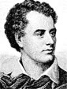
Джордж Гордон БайронGeorge Gordon Noel Byron1788 — 182412 стих.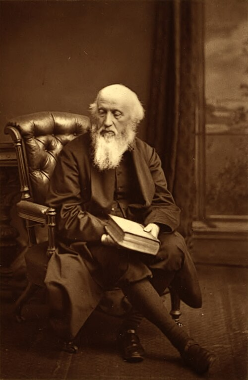
Уильям БарнесWilliam Barnes1801 — 18861 стих.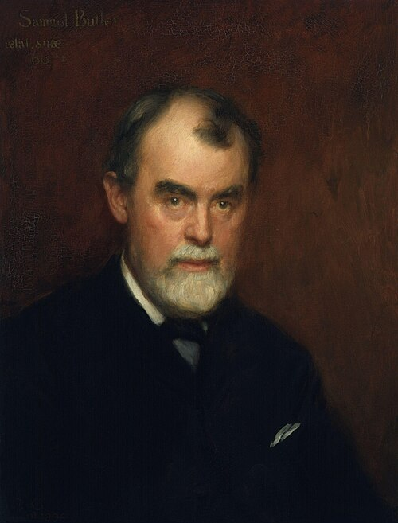
Самюэль БатлерSamuel Butler1835 — 19021 стих.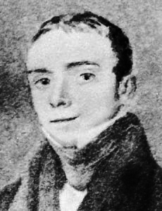
Томас Ловел БеддоузThomas Lovell Beddoes1803 — 18491 стих.- ФФрэнсис БеллербиFrances Bellerby1899 — 19751 стих.
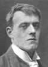
Хилари БеллокHilaire Belloc1870 — 19531 стих.- Стелла БенсонStella Benson1892 — 19331 стих.
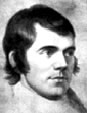
Роберт БернсRobert Burns1759 — 17961 стих.- ЧЧарльз БестCharles Best1570 — 16271 стих.
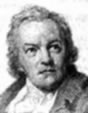
Уильям БлейкWilliam Blake1757 — 182753 стих.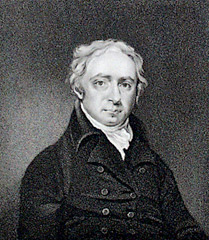
Уильям Лайл БоулзWilliam Lisle Bowles1762 — 18501 стих.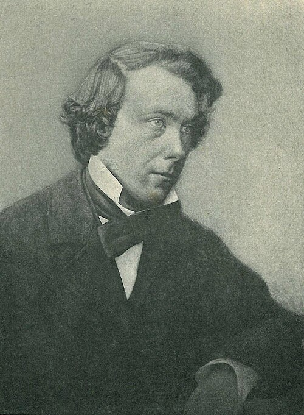
Томас Эдвард БраунThomas Edward Brown1830 — 18971 стих.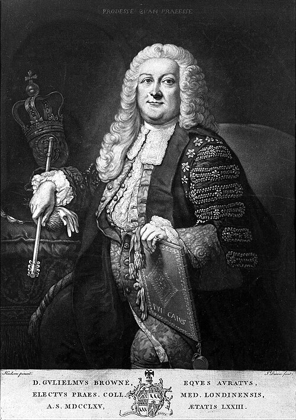
Уильям БраунSir William Browne1692 — 17741 стих.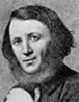
Роберт БраунингRobert Browning1812 — 18895 стих.- Элизабет Баррет БраунингElizabeth Barret Browning1806 — 186150 стих.
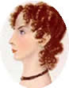
Анна БронтеAnne Bronte1820 — 18491 стих.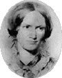
Шарлотта БронтеCharlotte Bronte1816 — 18552 стих.- Эмилия Джейн БронтеEmily Jane Bronte1818 — 18484 стих.
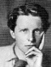
Руперт БрукRupert Chawner Brooke1887 — 19151 стих.- Гвендолин БруксGwendolyn Brooks1917 — 20001 стих.
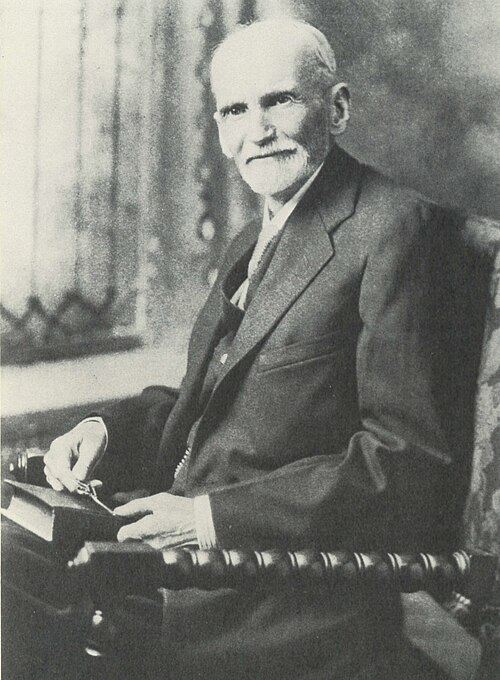
Гамалиель БрэдфордGamaliel Bradford1860 — 19321 стих.- ФФренсис Уильям БурдийонFrancis William Bourdillon1852 — 19211 стих.
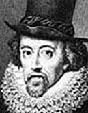
Фрэнсис БэконLord Francis Bacon1561 — 16261 стих.
В
Г
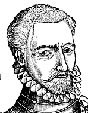
Джордж ГасконьGeorge Gascoigne1534 — 15771 стих.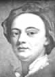
Джон ГейJohn Gay1685 — 17325 стих.- Джордж ГербертGeorge Herbert1593 — 16336 стих.
- Аллен ГинзбергAllen Ginsberg1926 — 19971 стих.
 Артур ГитерманArthur Guiterman1871 — 19431 стих.
Артур ГитерманArthur Guiterman1871 — 19431 стих.- Генри Говард, граф СеррейHenry Howard, earl of Surrey1517 — 15471 стих.
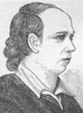
Оливер ГолдсмитOliver Goldsmith1730 — 17741 стих.- Фулке ГревилFulke Greville1554 — 16284 стих.
- ААлександр ГрейAlexander Gray1882 — 19681 стих.
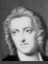
Томас ГрейThomas Gray1716 — 17711 стих.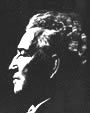
Роберт ГрейвзRobert von Ranke Graves1895 — 19853 стих.- ББартоломью ГриффинBartolomew Griffinрод. 16021 стих.
Д
- Самюэль ДаниэльSamuel Daniel1563 — 16191 стих.
- Роберт ДевреRobert Devereux, earl of Essex1566 — 16011 стих.
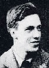
Сесил Дей-ЛьюисCecil Day-Lewis1904 — 19721 стих.- ДДетские рифмыNursery rhymes5 стих.
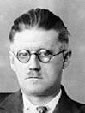
Джеймс ДжойсJames Augustine Alosius Joyce1882 — 19412 стих.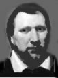
Бен ДжонсонBenjamin Jonson1572 — 16372 стих.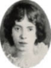
Эмилия ДикинсонEmily Elizabeth Dickinson1830 — 188630 стих.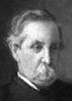
Остин ДобсонAustin Dobson1840 — 19213 стих.- Джон ДоннJohn Donne1572 — 163125 стих.
- Эрнст ДоусонErnest Christopher Dowson1867 — 19001 стих.
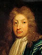
Джон ДрайденJohn Dryden1631 — 17001 стих.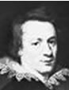
Уильям ДраммондWilliam Drummond1585 — 16491 стих.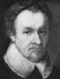
Майкл ДрейтонMichael Drayton1563 — 16311 стих.- ДДжон ДэвисSir John Davies1569 — 16261 стих.
 Уильям Генри ДэвисWilliam Henry Davies1871 — 19402 стих.
Уильям Генри ДэвисWilliam Henry Davies1871 — 19402 стих.
Е
К
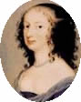
Маргарет КавендишMargaret Newcastle Cavendish1623 — 16732 стих.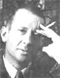
Э.Э. КамингсE. E. Cummings1894 — 19624 стих.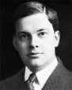
Джойс КилмерJoyce Kilmer1886 — 19181 стих.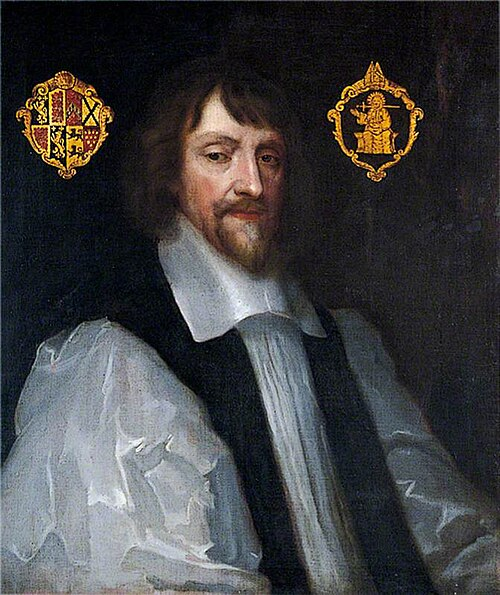
Генри КингHenry King1592 — 16641 стих.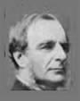
Чарльз КингслиCharles Kingsley1819 — 18755 стих.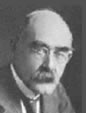
Редьярд КиплингRudyard Kipling1865 — 193617 стих.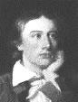
Джон КитсJohn Keats1795 — 182111 стих.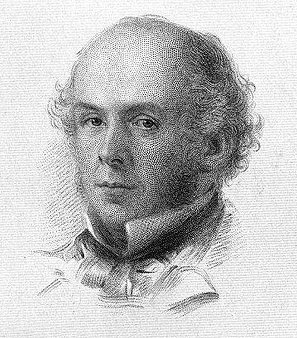
Артур Хью КлафArthur Hugh Clough1819 — 18611 стих.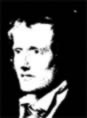
Джон КлерJohn Clare1793 — 18645 стих.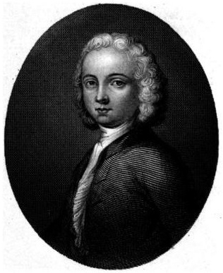
Уильям КоллинзWilliam Collins1721 — 17591 стих.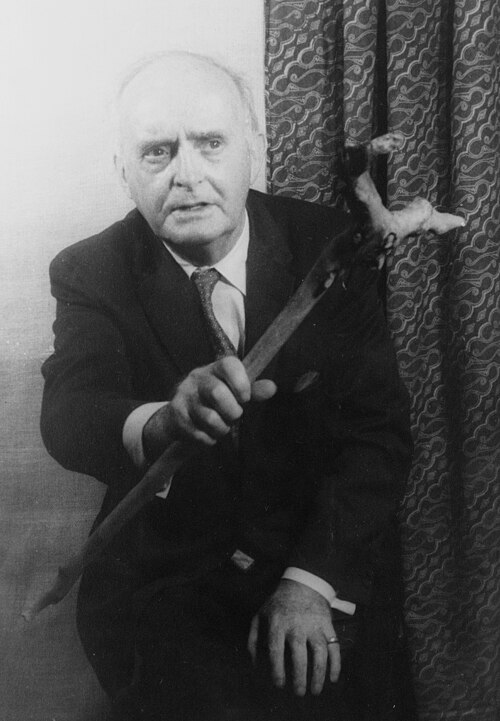
Падраик КолумPadraic Colum1881 — 19721 стих.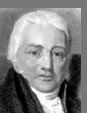
Самюэль Тэйлор КольриджSamuel Taylor Coleridge1772 — 18344 стих.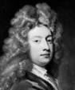
Уильям КонгривWilliam Congreve1670 — 17291 стих.- ГГенри КонстебльHenry Constable1562 — 16131 стих.
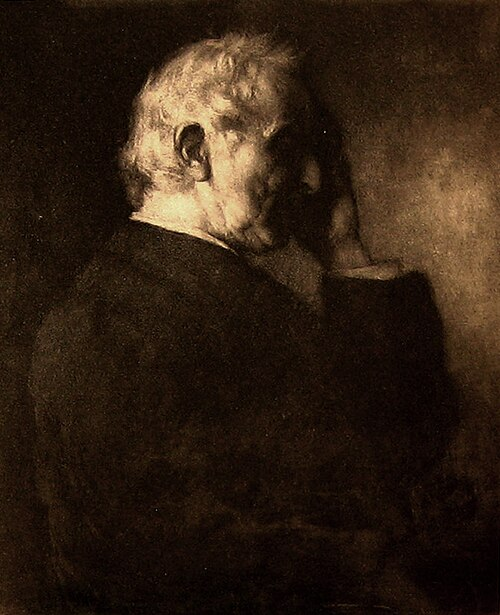
Уильям КориWilliam Johnson Cory1823 — 18921 стих.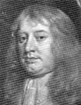
Абрахам КоулиAbraham Cowley1618 — 16672 стих.- Стефен КрейнStephen Crane1871 — 19001 стих.
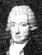
Уильям КуперWilliam Cowper1731 — 18001 стих.- ТТомас КэмпионThomas Campion1567 — 16202 стих.
- ППатрик КэриPatrick Caryрод. 16231 стих.
 Льюис КэрролLewis Carroll1832 — 18983 стих.
Льюис КэрролLewis Carroll1832 — 18983 стих.
Л
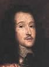
Ричард ЛавлэйсRichard Lovelace1618 — 16572 стих.- Филипп ЛаркинPhilip Larkin1922 — 19851 стих.
 Ами ЛевиAmy Levy1861 — 18891 стих.
Ами ЛевиAmy Levy1861 — 18891 стих.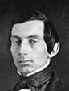
Авраам ЛинкольнAbraham Lincoln1809 — 18651 стих.- Эдвард ЛирEdward Lear1812 — 18885 стих.
- Джон Гибсон ЛокхартJohn Gibson Lockhart1794 — 18541 стих.
- Генри Водсворд ЛонгфеллоHenry Wadsworth Longfellow1807 — 18826 стих.
- Дэвид Герберт ЛоуренсDavid Herbert Lawrence1885 — 19303 стих.
- Эми ЛоуэлAmy Lowell1874 — 19251 стих.
- Джеймс Рассел ЛоуэллJames Russell Lowell1819 — 18912 стих.
- Чарльз ЛэмCharles Lamb1775 — 18341 стих.
- Уолтер ЛэндорWalter Savage Landor1775 — 186412 стих.
М
- Уолтер Де ла МарWalter de la Mare1873 — 19564 стих.
- Эндрю МарвелAndrew Marvell1621 — 16781 стих.
- Эдвин МаркхэмEdwin Markham1852 — 19401 стих.
- Кристофер МарлоChristopher Marlowe1564 — 15931 стих.
- Джон МейсфилдJohn Masefield1878 — 19671 стих.
- Оуэн МередитOwen Meredith1831 — 18911 стих.
- Эдна МиллейEdna St. Vincent Millay1892 — 19503 стих.
- Алан Александр МилнAlan Alexander Milne1882 — 195632 стих.
- Джон МилтонJohn Milton1608 — 16743 стих.
- Дом МоресDom Moraes1938 — 20042 стих.
- Кристофер МорлиChristopher Morley1890 — 19571 стих.
- Уильям МоррисWilliam Morris1834 — 18961 стих.
- Томас МурThomas Moore1779 — 18522 стих.
О
П
- Дороти ПаркерDorothy Parker1893 — 19674 стих.
- Ковентри ПатморCoventry Kersey Dighton Patmore1823 — 18962 стих.
- Эзра ПаундEzra Pound1885 — 19721 стих.
- Кристина Росетти. Песни-песенкиChristina Georgina Rossetti1830 — 1894122 стих.
- Сильвия ПлатSylvia Plath1932 — 19632 стих.
- Эдгар ПоEdgar Alan Poe1809 — 18493 стих.
- Александр ПоупAlexander Pope1688 — 17442 стих.
Р
- Джон Кроув РенсомJohn Crowe Ransom1888 — 19742 стих.
- Эдвин Арлингтон РобинсонEdwin Arlington Robinson1869 — 19352 стих.
- Данте Габриэль РосеттиDante Gabriel Rossetti1828 — 18822 стих.
- Кристина РосеттиChristina Georgina Rossetti1830 — 189428 стих.
- Джон Уилмот РочестерJohn Wilmot Rochester1647 — 16804 стих.
- Уолтер РэлиSir Walter Raleigh1554 — 16184 стих.
- ДДудли РэндалDudley Randall1914 — 20001 стих.
С
- Джон СаклингSir John Suckling1609 — 16421 стих.
- Карл СандбергCarl Sandburg1878 — 19672 стих.
- Джордж СантаянаGeorge Santayana1863 — 19521 стих.
- Уильям СаутарWilliam Soutar1898 — 19431 стих.
- Роберт СаутиRobert Southey1774 — 18431 стих.
- Джонатан СвифтJonathan Swift1667 — 17451 стих.
- Роберт СервисRobert William Service1874 — 19589 стих.
- Филипп СидниPhilip Sidney1554 — 15865 стих.
- Артур СимонсArthur William Symons1865 — 19453 стих.
- Льюис СимпсонLouis Simpsonрод. 19236 стих.
- Эдмунд Джон Миллингтон СинжEdmund John Millington Synge1871 — 19092 стих.
- Вальтер СкоттSir Walter Scott1771 — 18321 стих.
- Кристофер СмартChristopher Smart1722 — 17711 стих.
- УУильям СмитWilliam Smithрод. 15931 стих.
- Чарльз Гамильтон СорлиCharles Hamilton Sorley1895 — 19151 стих.
- Эдмунд СпенсерEdmund Spenser1552 — 15992 стих.
- Роберт Льюис СтивенсонRobert Louis Balfour Stevenson1850 — 18948 стих.
- Ричард Генри СтоддардRichard Henry Stoddard1853 — 19031 стих.
- Алжернон Чарльз СуинбурнAlgernon Charles Swinburne1837 — 19092 стих.
Т
- Рабиндранат ТагорRabindranath Tagore1861 — 19411 стих.
- ННахум ТейтNahum Tate1652 — 17151 стих.
- Альфред ТеннисонAlfred Tennyson1809 — 18924 стих.
- Сара ТиздэйлSara Teasdale1884 — 19333 стих.
- Джон Р.Р. ТолкиенJohn Ronald Reuel Tolkien1892 — 19731 стих.
- Дилан ТомасDylan Thomas1914 — 19531 стих.
- Эдвард ТомасEdward Thomas1878 — 19173 стих.
- Френсис ТомпсонFrancis Thompson1859 — 19071 стих.
- Джеймс ТомсонJames Thomson1834 — 18823 стих.
У
Ф
Х
- Джеймс Ли ХантJames Leigh Hunt1784 — 18591 стих.
- Томас ХардиThomas Hardy1840 — 19288 стих.
- Альфред Эдвард ХаусменAlfred Edward Housman1859 — 193615 стих.
- Джон ХейJohn Hay1838 — 19051 стих.
- Роберт ХеррикRobert Herrick1591 — 16741 стих.
- Герард Мэнли ХопкинсGerard Manley Hopkins1844 — 18896 стих.
- Алек Дервент ХоупAlec Derwent Hope1907 — 20001 стих.
- ССтефен ХоуэсStephen Hawes1475 — 15112 стих.
- Томас ХудThomas Hood1799 — 18453 стих.
- Лэнгстон ХьюсLangston Hughes1902 — 19671 стих.
- Тед ХьюсTed Hughes1930 — 19982 стих.
Ч
Ш
A
- Aiken, Conrad PotterКонрад Поттер Айкен1889 — 19738 стих.
- Akins, ZoeЗоя Эйкинс1886 — 19531 стих.
- Aldington, RichardРичард Олдингтон1892 — 19621 стих.
- Aldrich, Thomas BaileyТомас Бейли Олдрич1836 — 19074 стих.
- Arnold, MatthewМэтью Арнольд1822 — 18881 стих.
- AAshley, Kenneth H.Кеннет Эшлирод. 19231 стих.
- Atwood, MargaretМаргарет Этвудрод. 19391 стих.
- Auden, Wystan HughУистон Хью Оден1907 — 19734 стих.
- Austin, AlfredАльфред Остин1835 — 19131 стих.
B
- Bacon, Lord FrancisФрэнсис Бэкон1561 — 16261 стих.
- BBalladsШотландские баллады9 стих.
- Barnes, WilliamУильям Барнес1801 — 18861 стих.
- Beddoes, Thomas LovellТомас Ловел Беддоуз1803 — 18491 стих.
- BBellerby, FrancesФрэнсис Беллерби1899 — 19751 стих.
- Belloc, HilaireХилари Беллок1870 — 19531 стих.
- Benson, StellaСтелла Бенсон1892 — 19331 стих.
- BBest, CharlesЧарльз Бест1570 — 16271 стих.
- Blake, WilliamУильям Блейк1757 — 182753 стих.
- BBourdillon, Francis WilliamФренсис Уильям Бурдийон1852 — 19211 стих.
- Bowles, William LisleУильям Лайл Боулз1762 — 18501 стих.
- Bradford, GamalielГамалиель Брэдфорд1860 — 19321 стих.
- Bronte, AnneАнна Бронте1820 — 18491 стих.
- Bronte, CharlotteШарлотта Бронте1816 — 18552 стих.
- Bronte, Emily JaneЭмилия Джейн Бронте1818 — 18484 стих.
- Brooke, Rupert ChawnerРуперт Брук1887 — 19151 стих.
- Brooks, GwendolynГвендолин Брукс1917 — 20001 стих.
- Brown, Thomas EdwardТомас Эдвард Браун1830 — 18971 стих.
- Browne, Sir WilliamУильям Браун1692 — 17741 стих.
- Browning, Elizabeth BarretЭлизабет Баррет Браунинг1806 — 186150 стих.
- Browning, RobertРоберт Браунинг1812 — 18895 стих.
- Burns, RobertРоберт Бернс1759 — 17961 стих.
- Butler, SamuelСамюэль Батлер1835 — 19021 стих.
- Byron, George Gordon NoelДжордж Гордон Байрон1788 — 182412 стих.
C
- CCampion, ThomasТомас Кэмпион1567 — 16202 стих.
- Carroll, LewisЛьюис Кэррол1832 — 18983 стих.
- CCary, PatrickПатрик Кэрирод. 16231 стих.
- Cavendish, Margaret NewcastleМаргарет Кавендиш1623 — 16732 стих.
- Chapman, GeorgeДжордж Чапмен1559 — 16341 стих.
- Chaucer, GeoffreyДжефри Чосер1342 — 14001 стих.
- Chesterton, Gilbert KeithГилберт Кейт Честертон1874 — 19363 стих.
- Clare, JohnДжон Клер1793 — 18645 стих.
- Clough, Arthur HughАртур Хью Клаф1819 — 18611 стих.
- Coleridge, Samuel TaylorСамюэль Тэйлор Кольридж1772 — 18344 стих.
- Collins, WilliamУильям Коллинз1721 — 17591 стих.
- Colum, PadraicПадраик Колум1881 — 19721 стих.
- Congreve, WilliamУильям Конгрив1670 — 17291 стих.
- CConstable, HenryГенри Констебль1562 — 16131 стих.
- Cory, William JohnsonУильям Кори1823 — 18921 стих.
- Cowley, AbrahamАбрахам Коули1618 — 16672 стих.
- Cowper, WilliamУильям Купер1731 — 18001 стих.
- Crane, StephenСтефен Крейн1871 — 19001 стих.
- Cummings, E. E.Э.Э. Камингс1894 — 19624 стих.
D
- Daniel, SamuelСамюэль Даниэль1563 — 16191 стих.
- DDavies, Sir JohnДжон Дэвис1569 — 16261 стих.
- Davies, William HenryУильям Генри Дэвис1871 — 19402 стих.
- Day-Lewis, CecilСесил Дей-Льюис1904 — 19721 стих.
- Devereux, Robert, earl of EssexРоберт Девре1566 — 16011 стих.
- Dickinson, Emily ElizabethЭмилия Дикинсон1830 — 188630 стих.
- Dobson, AustinОстин Добсон1840 — 19213 стих.
- Donne, JohnДжон Донн1572 — 163125 стих.
- Dowson, Ernest ChristopherЭрнст Доусон1867 — 19001 стих.
- Drayton, MichaelМайкл Дрейтон1563 — 16311 стих.
- Drummond, WilliamУильям Драммонд1585 — 16491 стих.
- Dryden, JohnДжон Драйден1631 — 17001 стих.
E
F
G
- Gascoigne, GeorgeДжордж Гасконь1534 — 15771 стих.
- Gay, JohnДжон Гей1685 — 17325 стих.
- Ginsberg, AllenАллен Гинзберг1926 — 19971 стих.
- Goldsmith, OliverОливер Голдсмит1730 — 17741 стих.
- Graves, Robert von RankeРоберт Грейвз1895 — 19853 стих.
- GGray, AlexanderАлександр Грей1882 — 19681 стих.
- Gray, ThomasТомас Грей1716 — 17711 стих.
- Greville, FulkeФулке Гревил1554 — 16284 стих.
- GGriffin, BartolomewБартоломью Гриффинрод. 16021 стих.
- Guiterman, ArthurАртур Гитерман1871 — 19431 стих.
H
- Hardy, ThomasТомас Харди1840 — 19288 стих.
- HHawes, StephenСтефен Хоуэс1475 — 15112 стих.
- Hay, JohnДжон Хей1838 — 19051 стих.
- Herbert, GeorgeДжордж Герберт1593 — 16336 стих.
- Herrick, RobertРоберт Херрик1591 — 16741 стих.
- Hood, ThomasТомас Худ1799 — 18453 стих.
- Hope, Alec DerwentАлек Дервент Хоуп1907 — 20001 стих.
- Hopkins, Gerard ManleyГерард Мэнли Хопкинс1844 — 18896 стих.
- Housman, Alfred EdwardАльфред Эдвард Хаусмен1859 — 193615 стих.
- Howard, Henry, earl of SurreyГенри Говард, граф Серрей1517 — 15471 стих.
- Hughes, LangstonЛэнгстон Хьюс1902 — 19671 стих.
- Hughes, TedТед Хьюс1930 — 19982 стих.
- Hunt, James LeighДжеймс Ли Хант1784 — 18591 стих.
J
K
L
- Lamb, CharlesЧарльз Лэм1775 — 18341 стих.
- Landor, Walter SavageУолтер Лэндор1775 — 186412 стих.
- Larkin, PhilipФилипп Ларкин1922 — 19851 стих.
- Lawrence, David HerbertДэвид Герберт Лоуренс1885 — 19303 стих.
- Lear, EdwardЭдвард Лир1812 — 18885 стих.
- Levy, AmyАми Леви1861 — 18891 стих.
- Lincoln, AbrahamАвраам Линкольн1809 — 18651 стих.
- Lockhart, John GibsonДжон Гибсон Локхарт1794 — 18541 стих.
- Longfellow, Henry WadsworthГенри Водсворд Лонгфелло1807 — 18826 стих.
- Lovelace, RichardРичард Лавлэйс1618 — 16572 стих.
- Lowell, AmyЭми Лоуэл1874 — 19251 стих.
- Lowell, James RussellДжеймс Рассел Лоуэлл1819 — 18912 стих.
M
- de la Mare, WalterУолтер Де ла Мар1873 — 19564 стих.
- Markham, EdwinЭдвин Маркхэм1852 — 19401 стих.
- Marlowe, ChristopherКристофер Марло1564 — 15931 стих.
- Marvell, AndrewЭндрю Марвел1621 — 16781 стих.
- Masefield, JohnДжон Мейсфилд1878 — 19671 стих.
- Meredith, OwenОуэн Мередит1831 — 18911 стих.
- Millay, Edna St. VincentЭдна Миллей1892 — 19503 стих.
- Milne, Alan AlexanderАлан Александр Милн1882 — 195632 стих.
- Milton, JohnДжон Милтон1608 — 16743 стих.
- Moore, ThomasТомас Мур1779 — 18522 стих.
- Moraes, DomДом Морес1938 — 20042 стих.
- Morley, ChristopherКристофер Морли1890 — 19571 стих.
- Morris, WilliamУильям Моррис1834 — 18961 стих.
P
R
- Raleigh, Sir WalterУолтер Рэли1554 — 16184 стих.
- RRandall, DudleyДудли Рэндал1914 — 20001 стих.
- Ransom, John CroweДжон Кроув Ренсом1888 — 19742 стих.
- Robinson, Edwin ArlingtonЭдвин Арлингтон Робинсон1869 — 19352 стих.
- Rochester, John WilmotДжон Уилмот Рочестер1647 — 16804 стих.
- Rossetti, Christina GeorginaКристина Росетти. Песни-песенки1830 — 1894122 стих.
- Rossetti, Christina GeorginaКристина Росетти1830 — 189428 стих.
- Rossetti, Dante GabrielДанте Габриэль Росетти1828 — 18822 стих.
S
- Sandburg, CarlКарл Сандберг1878 — 19672 стих.
- Santayana, GeorgeДжордж Сантаяна1863 — 19521 стих.
- Scott, Sir WalterВальтер Скотт1771 — 18321 стих.
- Service, Robert WilliamРоберт Сервис1874 — 19589 стих.
- Shakespeare, WilliamУильям Шекспир1564 — 16165 стих.
 Shelley, Percy ByssheПерси Биши Шелли1792 — 18225 стих.
Shelley, Percy ByssheПерси Биши Шелли1792 — 18225 стих.- Shirley, JamesДжеймс Ширли1596 — 16661 стих.
- Sidney, PhilipФилипп Сидни1554 — 15865 стих.
- Simpson, LouisЛьюис Симпсонрод. 19236 стих.
- Smart, ChristopherКристофер Смарт1722 — 17711 стих.
- SSmith, WilliamУильям Смитрод. 15931 стих.
- Sorley, Charles HamiltonЧарльз Гамильтон Сорли1895 — 19151 стих.
- Soutar, WilliamУильям Саутар1898 — 19431 стих.
- Southey, RobertРоберт Саути1774 — 18431 стих.
- Spenser, EdmundЭдмунд Спенсер1552 — 15992 стих.
- Stevenson, Robert Louis BalfourРоберт Льюис Стивенсон1850 — 18948 стих.
- Stoddard, Richard HenryРичард Генри Стоддард1853 — 19031 стих.
- Suckling, Sir JohnДжон Саклинг1609 — 16421 стих.
- Swift, JonathanДжонатан Свифт1667 — 17451 стих.
- Swinburne, Algernon CharlesАлжернон Чарльз Суинбурн1837 — 19092 стих.
- Symons, Arthur WilliamАртур Симонс1865 — 19453 стих.
- Synge, Edmund John MillingtonЭдмунд Джон Миллингтон Синж1871 — 19092 стих.
T
- Tagore, RabindranathРабиндранат Тагор1861 — 19411 стих.
- TTate, NahumНахум Тейт1652 — 17151 стих.
- Teasdale, SaraСара Тиздэйл1884 — 19333 стих.
- Tennyson, AlfredАльфред Теннисон1809 — 18924 стих.
- Thomas, DylanДилан Томас1914 — 19531 стих.
- Thomas, EdwardЭдвард Томас1878 — 19173 стих.
- Thompson, FrancisФренсис Томпсон1859 — 19071 стих.
- Thomson, JamesДжеймс Томсон1834 — 18823 стих.
- Tolkien, John Ronald ReuelДжон Р.Р. Толкиен1892 — 19731 стих.
W
- Whitman, WaltУолт Уитмен1819 — 18921 стих.
- Wilde, Oscar Fingal O’Flahertie WillsОскар Уальд1854 — 190011 стих.
- Wolfe, CharlesЧарльз Вольф1791 — 18231 стих.
- Wordsworth, WilliamУильям Вордсворт1770 — 18507 стих.
- Wotton, Sir HenryГенри Уоттон1568 — 16391 стих.
- Wyatt, Sir ThomasТомас Уайетт1503 — 15422 стих.
- Wylie, ElinorЭлинор Вайли1885 — 19282 стих.
XIV век 1301–1400
XV век 1401–1500
XVI век 1501–1600
- Томас УайеттSir Thomas Wyatt1503 — 15422 стих.
- Генри Говард, граф СеррейHenry Howard, earl of Surrey1517 — 15471 стих.
- Королева Елизавета IQueen Elizabeth I1533 — 16031 стих.
- Джордж ГасконьGeorge Gascoigne1534 — 15771 стих.
- ДДжайлс ФлетчерGiles Fletcher1549 — 16111 стих.
- Эдмунд СпенсерEdmund Spenser1552 — 15992 стих.
- Филипп СидниPhilip Sidney1554 — 15865 стих.
XVII век 1601–1700
XVI век 1501–1600
- УУильям СмитWilliam Smithрод. 15931 стих.
- Уолтер РэлиSir Walter Raleigh1554 — 16184 стих.
- Фулке ГревилFulke Greville1554 — 16284 стих.
- Джордж ЧапменGeorge Chapman1559 — 16341 стих.
- Фрэнсис БэконLord Francis Bacon1561 — 16261 стих.
- ГГенри КонстебльHenry Constable1562 — 16131 стих.
- Самюэль ДаниэльSamuel Daniel1563 — 16191 стих.
- Майкл ДрейтонMichael Drayton1563 — 16311 стих.
- Кристофер МарлоChristopher Marlowe1564 — 15931 стих.
- Уильям ШекспирWilliam Shakespeare1564 — 16165 стих.
- Роберт ДевреRobert Devereux, earl of Essex1566 — 16011 стих.
- ТТомас КэмпионThomas Campion1567 — 16202 стих.
- Генри УоттонSir Henry Wotton1568 — 16391 стих.
- ДДжон ДэвисSir John Davies1569 — 16261 стих.
- ЧЧарльз БестCharles Best1570 — 16271 стих.
- Джон ДоннJohn Donne1572 — 163125 стих.
- Бен ДжонсонBenjamin Jonson1572 — 16372 стих.
- Джон ФлетчерJohn Fletcher1579 — 16251 стих.
- Уильям ДраммондWilliam Drummond1585 — 16491 стих.
- Роберт ХеррикRobert Herrick1591 — 16741 стих.
- Генри КингHenry King1592 — 16641 стих.
- Джордж ГербертGeorge Herbert1593 — 16336 стих.
- Джеймс ШирлиJames Shirley1596 — 16661 стих.
XVII век 1601–1700
- Джон МилтонJohn Milton1608 — 16743 стих.
- Джон СаклингSir John Suckling1609 — 16421 стих.
- Ричард ЛавлэйсRichard Lovelace1618 — 16572 стих.
- Абрахам КоулиAbraham Cowley1618 — 16672 стих.
- Эндрю МарвелAndrew Marvell1621 — 16781 стих.
- ГГенри ВоэнHenry Vaughan1622 — 16951 стих.
- Маргарет КавендишMargaret Newcastle Cavendish1623 — 16732 стих.
- ППатрик КэриPatrick Caryрод. 16231 стих.
- Джон ДрайденJohn Dryden1631 — 17001 стих.
- Джон Уилмот РочестерJohn Wilmot Rochester1647 — 16804 стих.
- ННахум ТейтNahum Tate1652 — 17151 стих.
- Анна ФинчAnne Finch1661 — 17201 стих.
- Джонатан СвифтJonathan Swift1667 — 17451 стих.
- Уильям КонгривWilliam Congreve1670 — 17291 стих.
- Джон ГейJohn Gay1685 — 17325 стих.
- Александр ПоупAlexander Pope1688 — 17442 стих.
- Уильям БраунSir William Browne1692 — 17741 стих.
XVIII век 1701–1800
- Томас ГрейThomas Gray1716 — 17711 стих.
- Уильям КоллинзWilliam Collins1721 — 17591 стих.
- Кристофер СмартChristopher Smart1722 — 17711 стих.
- Оливер ГолдсмитOliver Goldsmith1730 — 17741 стих.
- Уильям КуперWilliam Cowper1731 — 18001 стих.
- Уильям БлейкWilliam Blake1757 — 182753 стих.
- Роберт БернсRobert Burns1759 — 17961 стих.
- Уильям Лайл БоулзWilliam Lisle Bowles1762 — 18501 стих.
- Уильям ВордсвортWilliam Wordsworth1770 — 18507 стих.
- Вальтер СкоттSir Walter Scott1771 — 18321 стих.
- Самюэль Тэйлор КольриджSamuel Taylor Coleridge1772 — 18344 стих.
- Роберт СаутиRobert Southey1774 — 18431 стих.
- Чарльз ЛэмCharles Lamb1775 — 18341 стих.
- Уолтер ЛэндорWalter Savage Landor1775 — 186412 стих.
- Томас МурThomas Moore1779 — 18522 стих.
- Джеймс Ли ХантJames Leigh Hunt1784 — 18591 стих.
- Джордж Гордон БайронGeorge Gordon Noel Byron1788 — 182412 стих.
- Чарльз ВольфCharles Wolfe1791 — 18231 стих.
- Перси Биши ШеллиPercy Bysshe Shelley1792 — 18225 стих.
- Джон КлерJohn Clare1793 — 18645 стих.
- Джон Гибсон ЛокхартJohn Gibson Lockhart1794 — 18541 стих.
- Джон КитсJohn Keats1795 — 182111 стих.
- Томас ХудThomas Hood1799 — 18453 стих.
XIX век 1801–1900
- Уильям БарнесWilliam Barnes1801 — 18861 стих.
- Томас Ловел БеддоузThomas Lovell Beddoes1803 — 18491 стих.
- Ральф Уолдо ЭмерсонRalph Waldo Emerson1803 — 18824 стих.
- Элизабет Баррет БраунингElizabeth Barret Browning1806 — 186150 стих.
- Генри Водсворд ЛонгфеллоHenry Wadsworth Longfellow1807 — 18826 стих.
- Авраам ЛинкольнAbraham Lincoln1809 — 18651 стих.
- Эдгар ПоEdgar Alan Poe1809 — 18493 стих.
- Альфред ТеннисонAlfred Tennyson1809 — 18924 стих.
- Эдвард ЛирEdward Lear1812 — 18885 стих.
- Роберт БраунингRobert Browning1812 — 18895 стих.
- Шарлотта БронтеCharlotte Bronte1816 — 18552 стих.
- Эмилия Джейн БронтеEmily Jane Bronte1818 — 18484 стих.
- Артур Хью КлафArthur Hugh Clough1819 — 18611 стих.
- Чарльз КингслиCharles Kingsley1819 — 18755 стих.
- Джеймс Рассел ЛоуэллJames Russell Lowell1819 — 18912 стих.
- Уолт УитменWalt Whitman1819 — 18921 стих.
- Анна БронтеAnne Bronte1820 — 18491 стих.
- Мэтью АрнольдMatthew Arnold1822 — 18881 стих.
- Уильям КориWilliam Johnson Cory1823 — 18921 стих.
- Ковентри ПатморCoventry Kersey Dighton Patmore1823 — 18962 стих.
- Данте Габриэль РосеттиDante Gabriel Rossetti1828 — 18822 стих.
- Эмилия ДикинсонEmily Elizabeth Dickinson1830 — 188630 стих.
- Кристина РосеттиChristina Georgina Rossetti1830 — 189428 стих.
- Томас Эдвард БраунThomas Edward Brown1830 — 18971 стих.
- Оуэн МередитOwen Meredith1831 — 18911 стих.
- Льюис КэрролLewis Carroll1832 — 18983 стих.
- Джеймс ТомсонJames Thomson1834 — 18823 стих.
- Уильям МоррисWilliam Morris1834 — 18961 стих.
- Самюэль БатлерSamuel Butler1835 — 19021 стих.
- Альфред ОстинAlfred Austin1835 — 19131 стих.
- Томас Бейли ОлдричThomas Bailey Aldrich1836 — 19074 стих.
- Алжернон Чарльз СуинбурнAlgernon Charles Swinburne1837 — 19092 стих.
- Джон ХейJohn Hay1838 — 19051 стих.
- Томас ХардиThomas Hardy1840 — 19288 стих.
- Остин ДобсонAustin Dobson1840 — 19213 стих.
- Герард Мэнли ХопкинсGerard Manley Hopkins1844 — 18896 стих.
- Роберт Льюис СтивенсонRobert Louis Balfour Stevenson1850 — 18948 стих.
- ФФренсис Уильям БурдийонFrancis William Bourdillon1852 — 19211 стих.
- Эдвин МаркхэмEdwin Markham1852 — 19401 стих.
- Ричард Генри СтоддардRichard Henry Stoddard1853 — 19031 стих.
- Оскар УальдOscar Fingal O’Flahertie Wills Wilde1854 — 190011 стих.
- Френсис ТомпсонFrancis Thompson1859 — 19071 стих.
- Альфред Эдвард ХаусменAlfred Edward Housman1859 — 193615 стих.
- Гамалиель БрэдфордGamaliel Bradford1860 — 19321 стих.
- Ами ЛевиAmy Levy1861 — 18891 стих.
- Рабиндранат ТагорRabindranath Tagore1861 — 19411 стих.
- Джордж СантаянаGeorge Santayana1863 — 19521 стих.
- Редьярд КиплингRudyard Kipling1865 — 193617 стих.
- Уильям Батлер ЕйтсWilliam Butler Yeats1865 — 19396 стих.
- Артур СимонсArthur William Symons1865 — 19453 стих.
- Эрнст ДоусонErnest Christopher Dowson1867 — 19001 стих.
- Эдвин Арлингтон РобинсонEdwin Arlington Robinson1869 — 19352 стих.
- Хилари БеллокHilaire Belloc1870 — 19531 стих.
- Эдмунд Джон Миллингтон СинжEdmund John Millington Synge1871 — 19092 стих.
- Уильям Генри ДэвисWilliam Henry Davies1871 — 19402 стих.
- Артур ГитерманArthur Guiterman1871 — 19431 стих.
- Стефен КрейнStephen Crane1871 — 19001 стих.
- Уолтер Де ла МарWalter de la Mare1873 — 19564 стих.
- Роберт СервисRobert William Service1874 — 19589 стих.
- Гилберт Кейт ЧестертонGilbert Keith Chesterton1874 — 19363 стих.
- Эми ЛоуэлAmy Lowell1874 — 19251 стих.
- Роберт ФростRobert Frost1875 — 19632 стих.
- Эдвард ТомасEdward Thomas1878 — 19173 стих.
- Джон МейсфилдJohn Masefield1878 — 19671 стих.
- Карл СандбергCarl Sandburg1878 — 19672 стих.
- Падраик КолумPadraic Colum1881 — 19721 стих.
- Джеймс ДжойсJames Augustine Alosius Joyce1882 — 19412 стих.
- Алан Александр МилнAlan Alexander Milne1882 — 195632 стих.
- Сара ТиздэйлSara Teasdale1884 — 19333 стих.
- Элинор ВайлиElinor Wylie1885 — 19282 стих.
- Дэвид Герберт ЛоуренсDavid Herbert Lawrence1885 — 19303 стих.
- Эзра ПаундEzra Pound1885 — 19721 стих.
- Зоя ЭйкинсZoe Akins1886 — 19531 стих.
- Джойс КилмерJoyce Kilmer1886 — 19181 стих.
- Руперт БрукRupert Chawner Brooke1887 — 19151 стих.
- Томас Стерн ЭлиотThomas Stearns Eliot1888 — 19651 стих.
- Джон Кроув РенсомJohn Crowe Ransom1888 — 19742 стих.
- Конрад Поттер АйкенConrad Potter Aiken1889 — 19738 стих.
- Кристофер МорлиChristopher Morley1890 — 19571 стих.
- Стелла БенсонStella Benson1892 — 19331 стих.
- Эдна МиллейEdna St. Vincent Millay1892 — 19503 стих.
- Ричард ОлдингтонRichard Aldington1892 — 19621 стих.
- Джон Р.Р. ТолкиенJohn Ronald Reuel Tolkien1892 — 19731 стих.
- Уилфред ОуэнWilfred Owen1893 — 19181 стих.
- Дороти ПаркерDorothy Parker1893 — 19674 стих.
- Э.Э. КамингсE. E. Cummings1894 — 19624 стих.
- Роберт ГрейвзRobert von Ranke Graves1895 — 19853 стих.
- Чарльз Гамильтон СорлиCharles Hamilton Sorley1895 — 19151 стих.
- Уильям СаутарWilliam Soutar1898 — 19431 стих.
- ФФрэнсис БеллербиFrances Bellerby1899 — 19751 стих.
XX век 1901–2000
XIX век 1801–1900
XX век 1901–2000
- Лэнгстон ХьюсLangston Hughes1902 — 19671 стих.
- Огден НэшOgden Nash1902 — 19715 стих.
- Сесил Дей-ЛьюисCecil Day-Lewis1904 — 19721 стих.
- Уистон Хью ОденWystan Hugh Auden1907 — 19734 стих.
- Алек Дервент ХоупAlec Derwent Hope1907 — 20001 стих.
- Дилан ТомасDylan Thomas1914 — 19531 стих.
- ДДудли РэндалDudley Randall1914 — 20001 стих.
- Гвендолин БруксGwendolyn Brooks1917 — 20001 стих.
- Филипп ЛаркинPhilip Larkin1922 — 19851 стих.
- Льюис СимпсонLouis Simpsonрод. 19236 стих.
- Аллен ГинзбергAllen Ginsberg1926 — 19971 стих.
- Тед ХьюсTed Hughes1930 — 19982 стих.
- Сильвия ПлатSylvia Plath1932 — 19632 стих.
- Дом МоресDom Moraes1938 — 20042 стих.
- Маргарет ЭтвудMargaret Atwoodрод. 19391 стих.
- ДДетские рифмыNursery rhymes5 стих.
- ШШотландские балладыBallads9 стих.
Январь
- 3Джон Р.Р. Толкиен1892 — 1973
- 18Алан Александр Милн1882 — 1956
- 19Эдгар По1809 — 1849
- 22Джордж Гордон Байрон1788 — 1824
Февраль
- 2Джеймс Джойс1882 — 1941
- 6Кристофер Марло1564 — 1593
- 21Уистон Хью Оден1907 — 1973
- 27Генри Водсворд Лонгфелло1807 — 1882
Март
- 1Джеймс Рассел Лоуэлл1819 — 1891
- 6Элизабет Баррет Браунинг1806 — 1861
- 25Анна Бронте1820 — 1849
- 26Роберт Фрост1875 — 1963
Апрель
- 7Уильям Вордсворт1770 — 1850
- 21Шарлотта Бронте1816 — 1855
- 23Уильям Шекспир1564 — 1616
- 25Уолтер Де ла Мар1873 — 1956
- 27Сесил Дей-Льюис1904 — 1972
Май
- 7Роберт Браунинг1812 — 1889
- 12Данте Габриэль Росетти1828 — 1882
- 21Эдгар По1809 — 1849
- 25Ральф Уолдо Эмерсон1803 — 1882
- 29Гилберт Кейт Честертон1874 — 1936
- 31Уолт Уитмен1819 — 1892
Июнь
- 2Томас Харди1840 — 1928
- 3Аллен Гинзберг1926 — 1997
- 13Уильям Батлер Ейтс1865 — 1939
- 30Джон Гей1685 — 1732
Июль
- 24Роберт Грейвз1895 — 1985
- 30Эмилия Джейн Бронте1818 — 1848
Август
- 3Руперт Брук1887 — 1915
- 4Перси Биши Шелли1792 — 1822
- 5Конрад Поттер Айкен1889 — 1973
- 6Альфред Теннисон1809 — 1892
- 9Филипп Ларкин1922 — 1985
- 15Вальтер Скотт1771 — 1832
- 16Тед Хьюс1930 — 1998
Сентябрь
- 11Дэвид Герберт Лоуренс1885 — 1930
- 16Джон Гей1685 — 1732
- 26Томас Стерн Элиот1888 — 1965
Октябрь
- 14Э.Э. Камингс1894 — 1962
- 16Оскар Уальд1854 — 1900
- 27Сильвия Плат1932 — 1963
- 27Дилан Томас1914 — 1953
- 31Джон Китс1795 — 1821
Ноябрь
- 13Роберт Льюис Стивенсон1850 — 1894
- 28Уильям Блейк1757 — 1827
- 30Джонатан Свифт1667 — 1745
Декабрь
- 5Кристина Росетти1830 — 1894
- 6Джойс Килмер1886 — 1918
- 9Джон Милтон1608 — 1674
- 10Эмилия Дикинсон1830 — 1886
- 30Редьярд Киплинг1865 — 1936
Поэты-лауреаты Англии
Пожизненный титул придворного поэта; после смерти лауреата избирается следующий.
- 1591–1599Edmund Spenser→ Эдмунд Спенсер
- 1599–1619Samuel Daniel→ Самюэль Даниэль
- 1619–1637Benjamin Jonson→ Бен Джонсон
- 1638–1668Sir William D'Avenant
- 1668–1689John Drydenпервый, получивший этот титул официально→ Джон Драйден
- 1689–1692Thomas Shadwell
- 1692–1715Nahum Tate→ Нахум Тейт
- 1715–1718Nicholas Rowe
- 1718–1730Laurence Eusden
- 1730–1757Colley Cibber
- 1757–1785William Whitehead
- 1785–1790Thomas Warton
- 1790–1813Henry James Pye
- 1813–1843Robert Southey→ Роберт Саути
- 1843–1850William Wordsworth→ Уильям Вордсворт
- 1850–1892Alfred Lord Tennyson→ Альфред Теннисон
- 1896–1913Alfred Austin→ Альфред Остин
- 1913–1930Robert Bridges
- 1930–1967John Masefield→ Джон Мейсфилд
- 1968–1972Cecil Day-Lewis→ Сесил Дей-Льюис
- 1972–1984Sir John Betjeman
- 1984–1998Ted (Edward James) Hughes→ Тед Хьюс
- 1999–…Andrew Motion
Поэты-лауреаты США
С 1986 года титул присуждается ежегодно, иногда одному поэту несколько раз подряд.
- 1986–1987Robert Penn Warren
- 1987–1988Richard Wilbur
- 1988–1990Howard Nemerov
- 1990–1991Mark Strand
- 1991–1992Joseph Brodsky
- 1992–1993Mona Van Duyan
- 1993–1995Rita Dove
- 1995–1997Robert Hass
- 1997–2000Robert Pinsky
- 2000–2001Stanley Kunitz
- 2001–Billy Collins
Пулитцеровская премия
Номинация «Поэзия»; официально с 1922 года, премии 1918 и 1919 годов — от Поэтического общества.
- 1918Love Songs by Sara Teasdale→ Сара Тиздэйл
- 1919Old Road to Paradise by Maragaret Widdemer; Corn Huskers by Carl Sandburg→ Карл Сандберг
- 1922Collected Poems by Edwin Arlington Robinson→ Эдвин Арлингтон Робинсон
- 1923The Ballad of the Harp-Weaver: A Few Figs from Thistles: Eight Sonnets in American Poetry, (1922) A Miscellany by Edna St. Vincent Millay→ Эдна Миллей
- 1924New Hampshire: A Poem with Notes and Grace Notes by Robert Frost→ Роберт Фрост
- 1925The Man Who Died Twice by Edwin Arlington Robinson→ Эдвин Арлингтон Робинсон
- 1926What's O'Clock by the late Amy Lowell→ Эми Лоуэл
- 1927Fiddler's Farewell by Leonora Speyer
- 1928Tristram by Edwin Arlington Robinson→ Эдвин Арлингтон Робинсон
- 1929John Browns Body by Stephen Vincent Benet
- 1930Selected Poems by Conrad Aiken→ Конрад Поттер Айкен
- 1931Collected Poems by Robert Frost→ Роберт Фрост
- 1932The Flowering Stone by George Dillon
- 1933Conquistador by Archibald Macleish
- 1934Collected Verse by Robert Hillyer
- 1935Bright Ambush by Audrey Wurdemann
- 1936Strange Holiness by Robert P. Tristram Coffin
- 1937A Further Range by Robert Frost→ Роберт Фрост
- 1938Cold Morning Sky by Marya Zaturenska
- 1939Selected Poems by John Gould Fletcher
- 1940Collected Poems by Mark Van Doren
- 1941Sunderland Capture by Leonard Bacon
- 1942The Dust Which Is God by William Rose Benet
- 1943A Witness Tree by Robert Frost→ Роберт Фрост
- 1944Western Star by the late Stephen Vincent Benet
- 1945V-Letter and Other Poems by Karl Shapiro
- 1947Lord Weary's Castle by Robert Lowell
- 1948The Age of Anxiety by W. H. Auden→ Уистон Хью Оден
- 1949Terror and Decorum by Peter Viereck
- 1950Annie Allen by Gwendolyn Brooks→ Гвендолин Брукс
- 1951Complete Poems by Carl Sandburg→ Карл Сандберг
- 1952Collected Poems by Marianne Moore
- 1953Collected Poems 1917-1952 by Archibald MacLeish
- 1954The Waking by Theodore Roethke
- 1955Collected Poems by Wallace Stevens
- 1956Poems - North & South by Elizabeth Bishop
- 1957Things of This World by Richard Wilbur
- 1958Promises: Poems 1954-1956 by Robert Penn Warren
- 1959Selected Poems 1928-1958 by Stanley Kunitz
- 1960Heart's Needle by W. D. Snodgrass
- 1961Times Three: Selected Verse From Three Decades by Phyllis McGinley
- 1962Poems by Alan Dugan
- 1963Pictures from Breughel by the late William Carlos Williams
- 1964At The End Of The Open Road by Louis Simpson→ Льюис Симпсон
- 196577 Dream Songs by John Berryman
- 1966Selected Poems by Richard Eberhart
- 1967Live or Die by Anne Sexton
- 1968The Hard Hours by Anthony Hecht
- 1969Of Being Numerous by George Oppen
- 1970Untitled Subjects by Richard Howard
- 1971The Carrier of Ladders by William S. Merwin
- 1972Collected Poems by James Wright
- 1973Up Country by Maxine Kumin
- 1974The Dolphin by Robert Lowell
- 1975Turtle Island by Gary Snyder
- 1976Self-Portrait in a Convex Mirror by John Ashbery
- 1977Divine Comedies by James Merrill
- 1978Collected Poems by Howard Nemerov
- 1979Now and Then by Robert Penn Warren
- 1980Selected Poems by Donald Justice
- 1981The Morning of the Poem by James Schuyler
- 1982The Collected Poems by the late Sylvia Plath (a posthumous publication)→ Сильвия Плат
- 1983Selected Poems by Galway Kinnell
- 1984American Primitive by Mary Oliver
- 1985Yin by Carolyn Kizer
- 1986The Flying Change by Henry Taylor
- 1987Thomas and Beulah by Rita Dove
- 1988Partial Accounts: New and Selected Poems by William Meredith
- 1989New and Collected Poems by Richard Wilbur
- 1990The World Doesn't End by Charles Simic
- 1991Near Changes by Mona Van Duyn
- 1992Selected Poems by James Tate
- 1993The Wild Iris by Louise Gluck
- 1994Neon Vernacular: New and Selected Poems by Yusef Komunyakaa
- 1995The Simple Truth by Philip Levine
- 1996The Dream of the Unified Field by Jorie Graham
- 1997Alive Together: New and Selected Poems by Lisel Mueller
- 1998Black Zodiac by Charles Wright
- 1999Blizzard of One by Mark Strand
- 2000Repair by C.K. Williams
- 2001Different Hours by Stephen Dunn
- 2002Practical Gods by Carl Dennis
Боллингенская премия
Присуждается Библиотекой Йельского университета.
- 1949Ezra Pound→ Эзра Паунд
- 1950Wallace Stevens
- 1951John Crowe Ransom→ Джон Кроув Ренсом
- 1952Marianne Moore
- 1953Archibald MacLeish and William Carlos Williams
- 1954W. H. Auden→ Уистон Хью Оден
- 1955Leonie Adams and Louise Bogan
- 1956Conrad Aiken→ Конрад Поттер Айкен
- 1957Allen Tate
- 1958e.e. cummings→ Э.Э. Камингс
- 1959Theodore Roethke
- 1960Delmore Schwartz
- 1961Yvor Winters
- 1962John Hall Wheelock and Richard Eberhart
- 1963Robert Frost→ Роберт Фрост
- 1965Horace Gregory
- 1967Rober Penn Warren
- 1969John Berryman and Karl Shapiro
- 1971Richard Wilbur and Mona Van Duyn
- 1973James Merrill
- 1975Archie Randolph Ammons
- 1977David Ignatow
- 1979W.S. Merwin
- 1981Howard Nemerov and May Swenson
- 1983Anthony Hecht and John Hollander
- 1985John Ashbery and Fred Chappell
- 1987Stanley Kunitz
- 1989Edgar Bowers
- 1991Laura Riding Jackson and Donald Justice
- 1993Mark Strand
- 1995Kenneth Koch
- 1997Gary Snyder
- 1999Robert Creeley
- 2001Louise Gluck
поэт есть на сайте — ссылка ведёт на его страницу